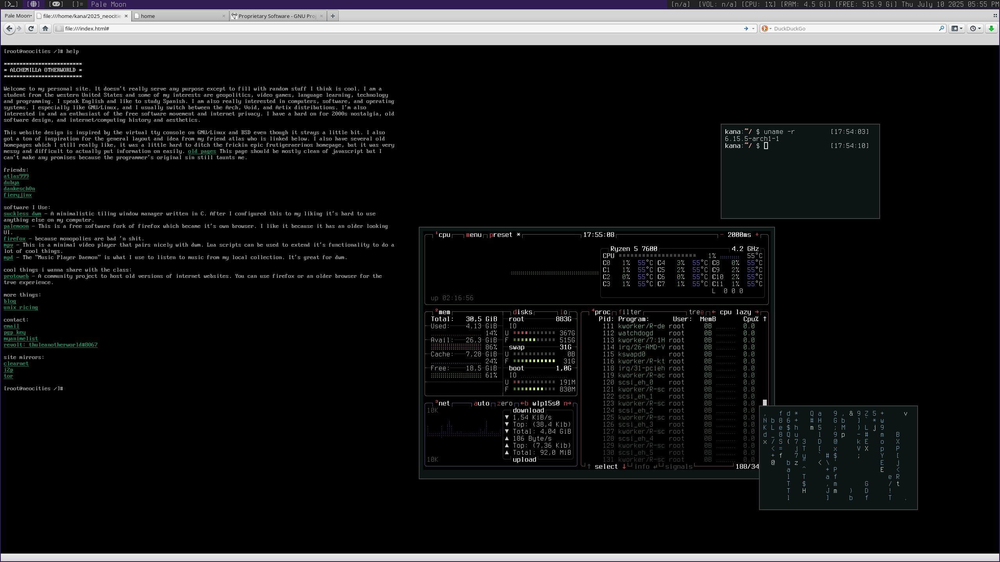

***********
unix ricing
***********
I have an unhealthy obsession with 'ricing' my desktop, so I figured it probably deserves its own page. You might already know what that is, but if you don't, its basically the concept of decorating your computer. It's a pretty common practice on *NIX systems but you can even do it on windows and macOS with enough effort. The name comes from asian street racers who would trick out their cars to make them look cooler. Ignore the slightly racist name because it's all in good fun.
This is my dwm 'rice' at the time of writing this, although I can guarantee you it probably changed at least a little like 2 days after. It has gotten to the point where it has honestly become neurotic and I think I am actually going backwards in terms of aesthetic value but it's okay.
here are some cool resources for ricing your computer: